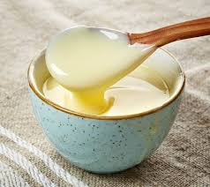

ADVANTAGES
5 Health Benefits of Vanillin
1. Antioxidant
Most frequently studied as a component of other substances, vanillin is known for its antioxidant properties. (3) The wide range of potential applications that antioxidant-rich substances have make them important for both research and inclusion in our plant-based preparations. Antioxidants battle free radical damage and repair its effects, which means they make important changes at a cellular level. This implicates antioxidants in everything from mucosal healing to cancer battling to skin rejuvenation. Application: Refresh skin by including vanilla oil in lotion and other topical treatments. For extra antioxidant power, pair with scavenging superstar clove essential oil.
2. Antibacterial
In a rare test of actual vanilla oil, researchers evaluated the efficacy of vanilla oil for inhibiting certain bacteria. The testing also evaluated ylang ylang and patchouli oils. For the bacteria in question – a strain of Staph. – vanilla was able to inhibit its development. (4) Essential oils with antibacterial benefits are extremely useful. In today's age of chemical synthetics and overuse, we find ourselves with more harm than benefit when using commercial antibacterial products. To stop the spread of dangerous bacteria without risking our health is invaluable! Application: Include vanilla oil in a DIY hand soap for a pleasant-smelling yet effective antibacterial. Pair with citrus for an extra boost as well as a refreshing blend of scents.
3. Antidepressant
Essential oils are often used for their uplifting, antidepressant abilities thanks to their simple applications and quick results. It never ceases to amaze me that simply smelling a fragrance can so quickly and effectively reach and affect the brain! Vanillin has been studied for its in vitro ability to relieve depression. Tracking markers of depression in mice, researchers were able to determine antidepressant activity with the vanillin compound. (5) While every body is different and nothing should take the place of professional help for depression, news of a new compound that may help relieve depression is always welcome. Application: Diffuse vanilla as an uplifting aroma, or use it in a personal inhaler for times when more directly rejuvenating effects are needed.
4.Anticancer
As usual with cancer and essential oils, the preface for this discussion is that more research must be executed. Thanks in no small part to its antioxidant ability, though, vanillin and substances that contain it (like vanilla!) are among the oils and compounds considered for anticancer ability. (6) Until we know more specifically how these actions work in the body and the best ways to incorporate them for direct efficacy, we can enjoy using a substance that cancer doesn't like! Application: Diffuse, inhale, and use vanilla oil topically, and cook with vanilla extract.5.Anti-inflammatory
Also in line with the effects of antioxidants, vanillin is likely to be anti-inflammatory. (7) This effect tends to happen with antioxidant substances thanks to that cellular level repair that takes place. As a non-traditional oil, topical applications are excellent for executing this effect, massaging it deep into the muscles and joints that are inflamed or applying it to skin that is plagued with inflammation. Applications: Warm and dilute into a carrier oil like almond, jojoba, or coconut for a soothing anti-inflammatory application.
Hair Benefits Of Vanilla:
1.Vanilla for Silky Hair
Vanilla when mixed with other ingredients can make your hair silky, shiny and smooth. You can prepare a hair pack for this purpose. Melt about 4 oz. shea butter in a boiler. After it has fully melted, add 5 drops of vanilla essential oil and 2 tablespoons each of almond, jojoba and castor oils. After cooling, blend this mixture until it achieves a softer consistency. You can apply this mixture on your hair for 10 to 15 minutes and wash off with a mild shampoo. This will make your hair soft and manageable without making it sticky. This mixture can be stored at room temperature or refrigerated for future use.
2.Promotes Hair Growth
Both carrier and essential oils help in promoting hair growth (6). These oils can be combined with vanilla essential oil for a hot oil treatment. To begin with, detangle your hair with a wide-toothed comb and rinse it thoroughly with warm water. After this, warm ¼ cup of any carrier oil such as virgin olive, jojoba, almond or coconut oil on high heat for about 30 seconds. Add 10 drops each of lavender and vanilla essential oils to it and mix thoroughly. Applying this on your hair from the roots to the ends, massage your scalp in circular motions for 2 to 3 minutes. Ensure to apply it along the full length of your hair strands, concentrating more on the dry ends. Fasten your hair with a hair clip and wrap a warm towel around your head. Leave for 15 minutes. Then again wrap a warm towel for another 15 minutes. Wash off with a mild shampoo. The quantity of oil that you use depends upon your hair texture. This will make your hair softer, fuller and shinier besides imparting an amazing scent.
DISADVANTAGES
Imitation of Vanilla Flavoring:
1.Low in Vitamins and Minerals
Do not rely on imitation vanilla flavoring to boost your vitamin and mineral intake by a significant percentage. One serving of this fluid contains 3 percent of the daily recommended intake of manganese and 1 percent of the riboflavin you should consume each day. While this is not a large amount of either of these nutrients, it does make imitation vanilla slightly useful for keeping your bones healthy and reducing your risk of cardiovascular disease.
2.May Contain Alcohol
While you can purchase imitation vanilla flavoring without alcohol, many brands of this flavoring do contain it. One tablespoon can have as much as 4.3 grams of alcohol present to help preserve the vanilla flavor. During the cooking or baking process, the alcohol in this fluid generally burns away; however, cases have been reported of people drinking imitation vanilla flavoring that contains alcohol to achieve intoxication.
3.Contains Chemical Additives
Imitation vanilla flavoring relies on lignin vanillin, a chemically produced compound that mimics the flavor of vanillin, the natural extract from real vanilla that produces its flavor. Lignin vanillin is created using wastes produced in the paper manufacturing industry. Some vanilla flavorings also contain glycerin or a glycol base.